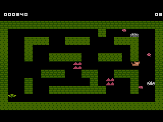
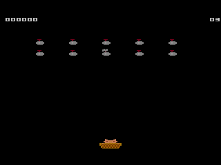
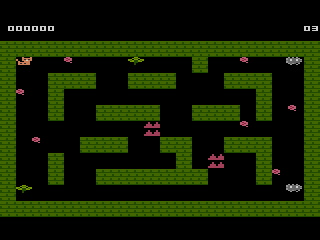
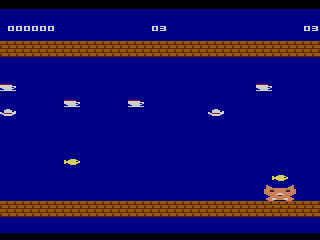
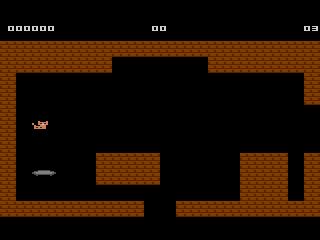

Make a 7800 cartridge game. Play it on your TV.
Make a 7800 game in a browser tab: draw the sprites, paint the rooms, change the rules. Play it full screen on the TV, send it as a web page, print the box, or download the ROM for a flash cartridge.

This is the game file itself, recorded as it ran.
On the cart
Each one is recorded from its ROM in js7800. All four are starters you can open and change.
-

Cat vs. Vacuums. A line of vacuums marches down. Throw socks at them before they reach the floor. -

Ghost Panic. Catnip scares the dust bunnies for six seconds. Catch them while it lasts, and mind the spikes. -

Teacup Rain. Teacups fall for thirty seconds. Weave between them and catch the fish. -

Pantry Raid. Four rooms, a key, a locked door and a crown. Shadows follow you from room to room.
What it writes
Every 15 seconds: turn every Dust ghost into a Fast ghost for 4 seconds and play Zap.
rem rule 8: Every 15 seconds: turn every Dust ghost into a Fast ghost for 4 seconds and play Zap.
rule8
if secondtick <> 0 then goto rule8_end
ev8 = ev8 - 1
if ev8 then goto rule8_end
ev8 = 15
gosub rule8_do
if ruleexit then return
rule8_endrule8_do
for ak = 1 to 2
if otype[ak] <> T_GHOST then goto tgt_16
if oback[ak] = EMPTY then oback[ak] = otype[ak]
otimer[ak] = 40
otype[ak] = T_FAST_GHOST
tgt_16
next
playsfx sfx_zap
returnExport game.bas and the sprite PNGs and carry on in your own editor.
On a console
To play it on a console you need a flash cartridge, a cart that loads games from an SD card.
- Get a flash cartridge that plays 7800 games. Check that the seller lists 7800 games as well as 2600 ones.
- In Cartridge Studio, open Show it and download the game for a flash cartridge, then copy the file onto the SD card.
- Put the cartridge in the console, switch on, and pick your game from its menu.
Nobody has tested these games on real hardware yet.
Tried one on hardware? Open a boot report on GitHub.
Who owns the games? You do. The 7800basic licence leaves ROMs built from your source with you, and the runtime code in them is CC0.